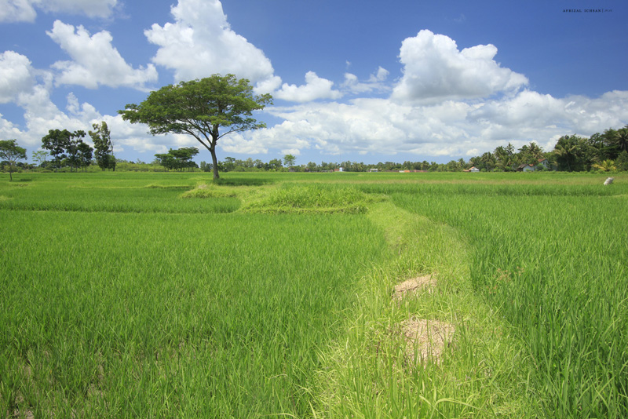
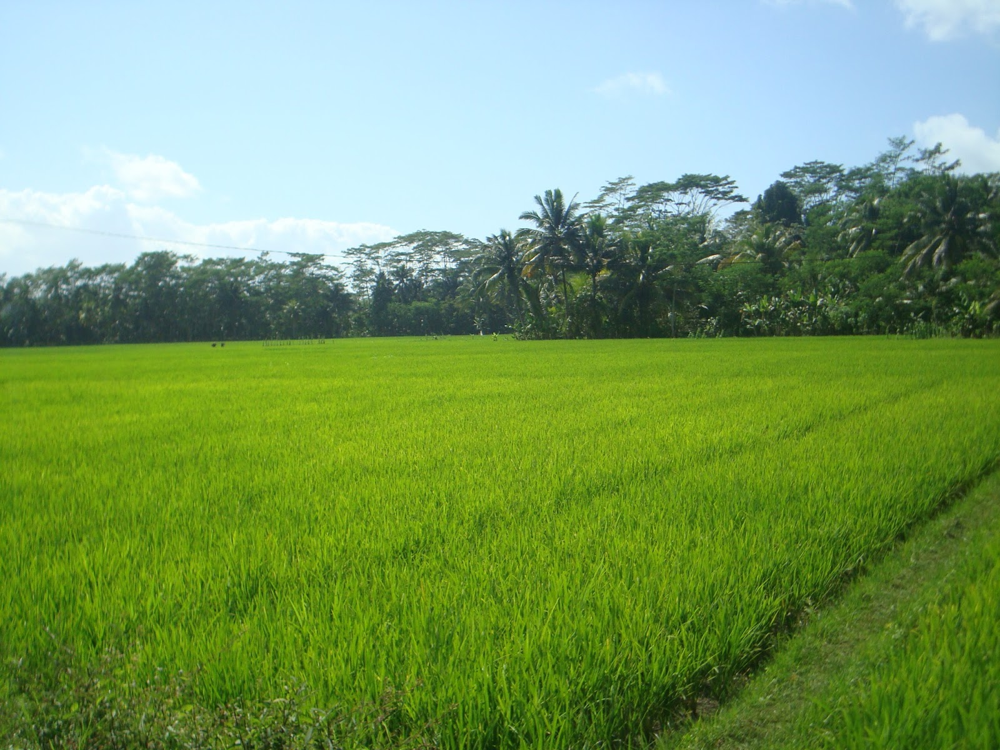
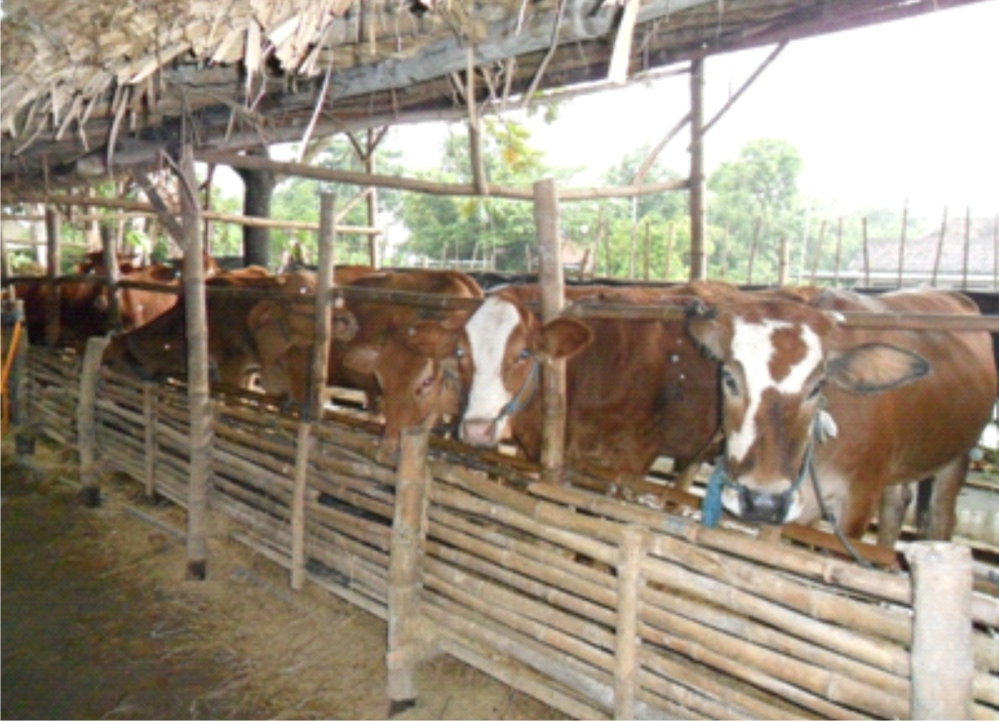
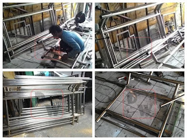
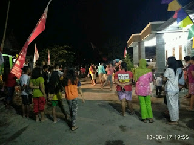
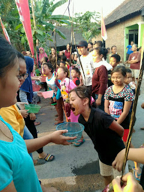
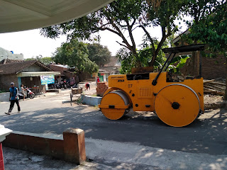
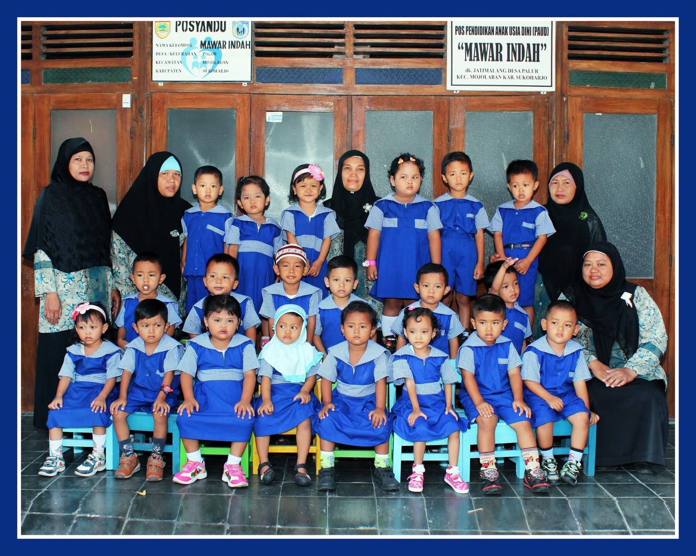
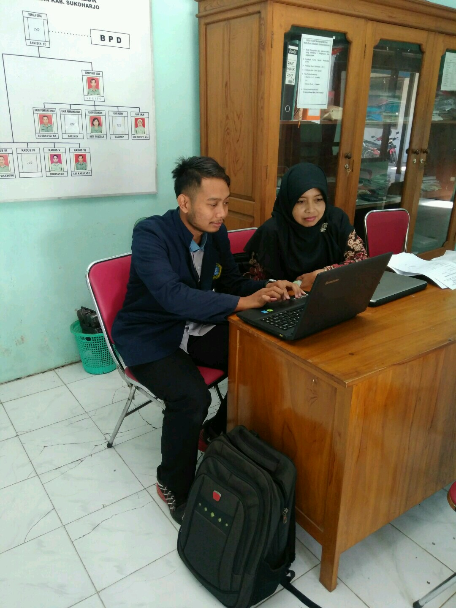
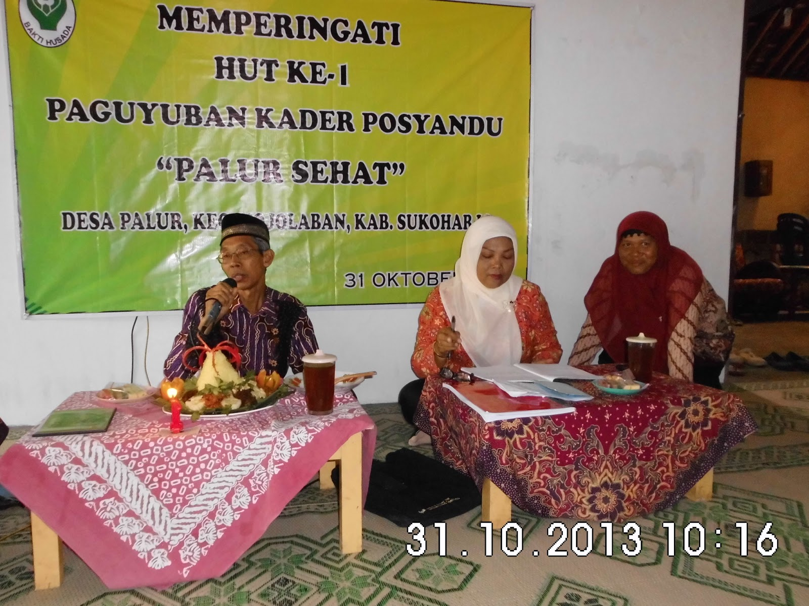

Membangun Desa Palur yang Mandiri, Sejahtera, dan Transparan
Pusat informasi publik terpadu, transparansi penyelenggaraan pemerintahan desa, dan kemudahan akses pelayanan administrasi kependudukan bagi seluruh masyarakat Desa Palur, Kecamatan Mojolaban, Kabupaten Sukoharjo.
Kantor Pelayanan Desa
Buka Hari Kerja- Senin - Kamis: 08.00 - 12.30 WIB
- Jum'at: 08.00 - 11.00 WIB
- Sabtu - Minggu: Libur / Tutup
Statistik & Wilayah Desa
Data demografis dan kewilayahan Desa Palur berdasarkan data publikasi resmi Badan Pusat Statistik (BPS) dan dokumen arsip monografi desa.
Desa terluas di Kec. Mojolaban (mencakup 11,51% luas kecamatan).
Desa dengan kepadatan penduduk tertinggi di Kecamatan Mojolaban.
Tanah persawahan produktif warga dan kas desa penopang ketahanan pangan.
Wilayah strategis berbatasan langsung dengan Kota Surakarta & Karanganyar.

Selamat Datang di Portal Desa Palur
Secara administratif, Desa Palur merupakan salah satu dari 15 desa di wilayah Kecamatan Mojolaban, Kabupaten Sukoharjo. Terletak di perbatasan segitiga emas yang menghubungkan Kabupaten Sukoharjo, Kabupaten Karanganyar, dan Kota Surakarta dengan batas barat Sungai Bengawan Solo, Palur berkembang menjadi kawasan strategis berbasis pertanian, peternakan, sentra perdagangan, dan industri rumah tangga.
Sambutan Kepala Desa Palur
"Website desa ini hadir sebagai sarana keterbukaan informasi dan jembatan pelayanan publik yang mendekatkan pemerintah desa kepada seluruh lapisan warga masyarakat Palur. Kami senantiasa berkomitmen mengedepankan pengabdian yang jujur, transparan, dan profesional."
Pelayanan Administrasi Warga
Informasi persyaratan, formulir, dan alur pengurusan dokumen kependudukan di Kantor Pemerintah Desa Palur.
KTP Elektronik (KTP-el)
Pengurusan surat pengantar perekaman baru, penggantian KTP rusak, maupun perubahan elemen data identitas kependudukan.
Kartu Keluarga (KK)
Penerbitan Kartu Keluarga baru, penambahan anggota keluarga karena kelahiran, maupun pembaruan akibat mutasi domisili.
Akta Kelahiran
Pencatatan pelaporan kelahiran baru sebagai dasar pemberian NIK pada KK serta penerbitan kutipan Akta Catatan Sipil.
Surat Keterangan Pindah
Pelayanan surat keterangan pindah bagi penduduk Desa Palur yang berencana pindah domisili antardesa, antarkecamatan, atau luar kota.
Pengantar SKCK
Surat keterangan pengantar kelakuan baik dari desa untuk persyaratan penerbitan SKCK di Polsek Mojolaban atau Polres Sukoharjo.
Surat Ket. Tidak Mampu (SKTM)
Surat keterangan untuk pemenuhan syarat beasiswa pendidikan, keringanan biaya sekolah, atau keperluan jaminan kesehatan sosial.
Potensi Ekonomi & Sumber Daya
Kekuatan ekonomi Desa Palur ditopang oleh kesuburan lahan pertanian, kemandirian peternakan warga, dan berkembangnya industri rumah tangga lokal.

Lahan Sawah 220,69 Hektare
Lahan persawahan membentang luas lebih dari 53% wilayah desa, didukung sistem irigasi pengairan Bengawan Solo yang subur untuk komoditas padi dan palawija.
Baca Ulasan Pertanian
Sapi, Kambing & Unggas
Masyarakat memanfaatkan jerami sawah sebagai pakan hewan ternak sapi dan kambing (318 peternak terdata), dengan limbah kotoran yang diolah kembali menjadi pupuk kandang organik.
Baca Ulasan Peternakan
Sentra Usaha Rumahan & UMKM
Letak strategis segitiga perbatasan melahirkan industri rumahan aktif seperti Snack Berkah, Bakpao Seven Taste, dan Bengkel Konstruksi Las yang menyerap tenaga kerja lokal.
Baca Ulasan IndustriKabar & Berita Wilayah
Dokumentasi liputan kegiatan, pembangunan infrastruktur, dan kemasyarakatan di lingkungan Desa Palur.

27 Agu 2017Malam Tirakatan Memperingati HUT RI ke-72 Warga Palur
Warga masyarakat Desa Palur berkumpul dalam malam tirakatan dengan pembacaan puisi kemerdekaan, koor lagu kebangsaan, dan refleksi kebangsaan oleh Kepala Desa Sugito.
Baca Selengkapnya
22 Agu 2017Lomba Kemeriahan Warga Dukuh Klaruan RW 14
Semarak perlombaan khas agustusan warga Dukuh Klaruan RW 14 Desa Palur, mulai balap karung, pecah air, hingga perlombaan kebersamaan antarwarga.
Baca Selengkapnya
30 Jul 2017Perbaikan dan Pengaspalan Jalan Utama Desa Palur
Realisasi pembangunan jalan penghubung Dukuh Jatimalang, Klaruan, hingga batas Karanganyar guna memperlancar mobilitas pertanian dan ekonomi warga.
Baca SelengkapnyaGaleri Foto Dokumentasi
Dokumentasi foto otentik peristiwa penting, lembaga pendidikan anak, dan pelayanan posyandu masyarakat Desa Palur.



PAUD Mawar Palur
Pendidikan Usia Dini

Sosialisasi Web Desa
Keterbukaan Informasi

Pengurus Posyandu
Kesehatan MasyarakatLokasi & Kontak Pemerintah Desa
Akses alamat kantor, nomor koordinasi pelayanan, dan denah peta lokasi Kantor Pemerintah Desa Palur.
Kantor Desa Palur
Melayani urusan administrasi persuratan kependudukan, pengantar perizinan, dan musyawarah kemasyarakatan.